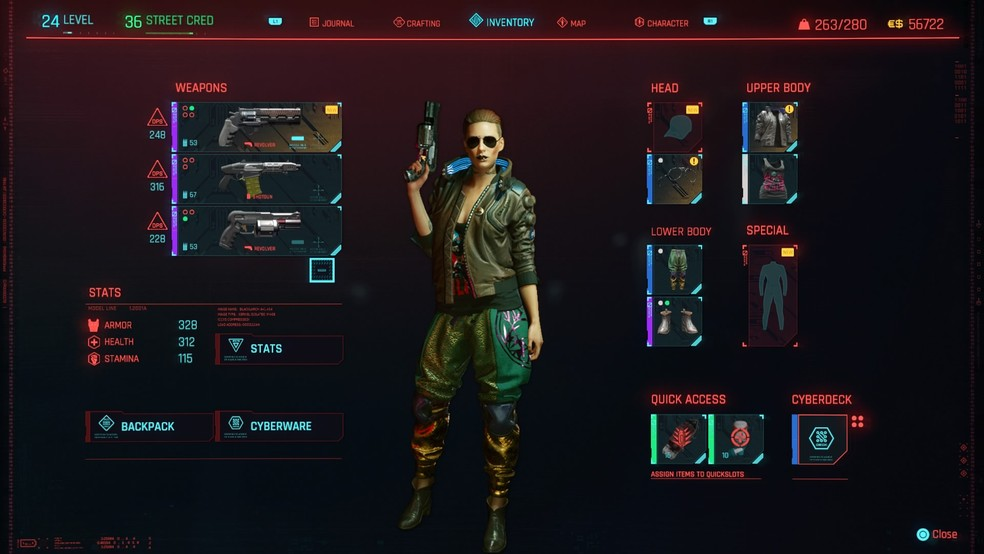
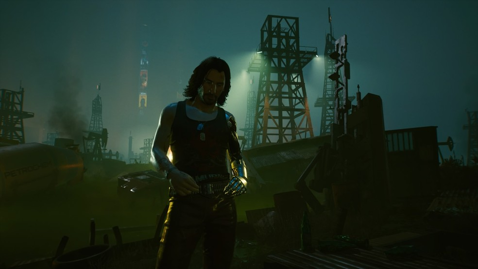
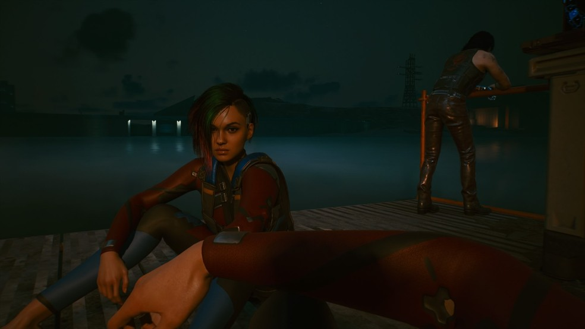
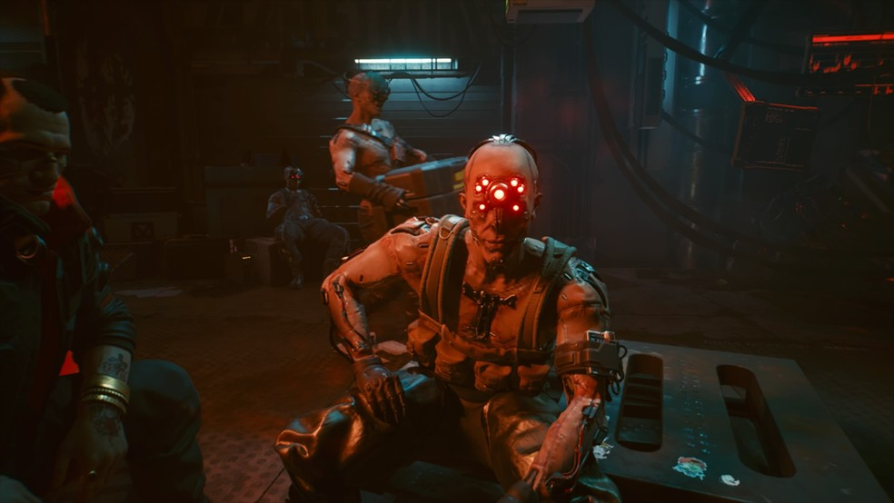
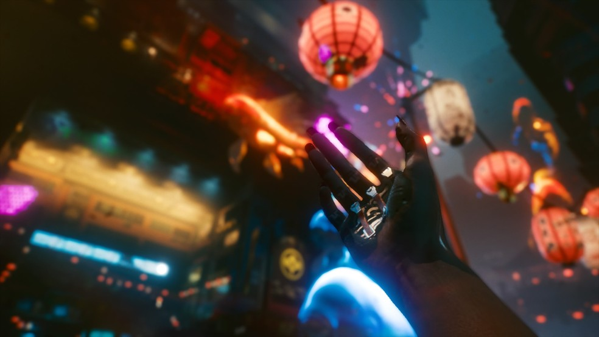
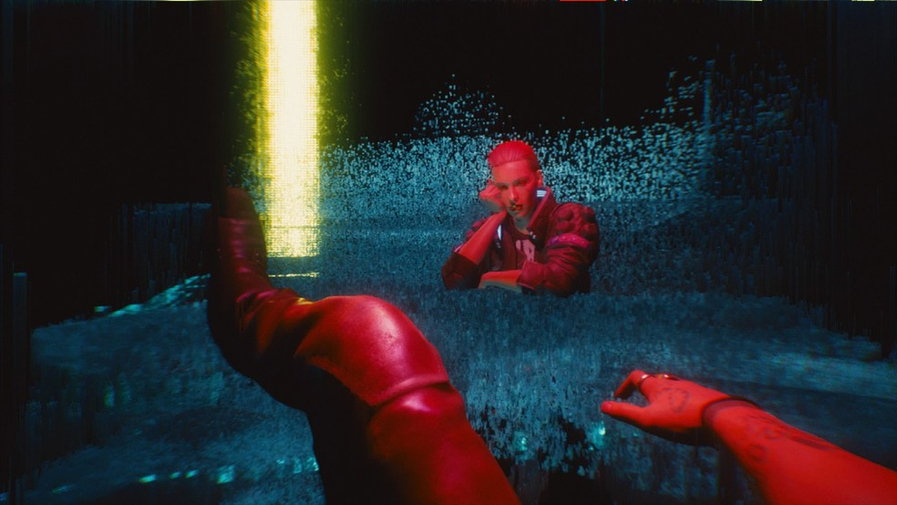
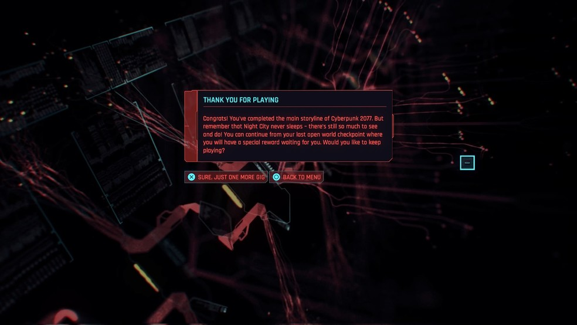

Cyberpunk 2077 chegou ao mercado no dia 10 de dezembro de 2020, oito anos depois de seu primeiro anúncio. O jogo, que era um dos mais aguardados, decepcionou bastante logo em seu lançamento, marcado por inúmeros bugs, fechamentos inesperados e baixa performance gráfica nos consoles de geração passada, PlayStation 4 (PS4) e Xbox One. Em menos de duas semanas, o título foi retirado por tempo indeterminado da loja virtual da Sony, e fez com que a CD Projekt Red (CDPR), sua desenvolvedora, pedisse desculpas públicas.
Cyberpunk 2077 já vendeu 13 milhões de cópias mesmo com bugs e polêmicas
Embora frustrante em diversos aspectos, por baixo de suas tantas imperfeições há definitivamente um bom enredo em Cyberpunk 2077, com um enorme potencial reflexivo, exploratório e imersivo. Vale dizer que o game está disponível, também, para PlayStation 5 (PS5), Xbox Series S/X e PC (via Steam), em versões otimizadas. Confira, nas linhas a seguir, o que achamos do novo RPG da CD Projekt Red aqui no Boca Aberta.
Em Cyberpunk 2077, você é convidado a viver como V, uma mercenária jogável no sexo feminino ou masculino, em sua jornada na distópica Night City. Logo no início, o game dá a opção de montar um personagem a partir das opções disponíveis de customização, ou selecionar os protagonistas padrões. É importante comentar, aqui, que a variedade de personalizações é bastante baixa em relação ao que foi anunciado no período de promoção do jogo. Além disso, durante a jogatina, não é possível alterar a aparência completa de seu personagem (apenas as roupas podem ser alteradas).
O jogador pode escolher entre três modos de jogo: Street Kid, Nomad ou Corporate. Aqui no Boca Aberta, optamos por viver a aventura como Street Kid. Embora dê diferentes inícios ao gameplay, a escolha selecionada não tem grande impacto na história a longo prazo, já que, em resumo, serve apenas para determinar os itens e as opções de fala que serão liberados. O final do game, vale dizer, é o mesmo para todos os modos.
As opções de customização em Cyberpunk 2077 são poucas, mas há algumas roupas legais — Foto: Reprodução/TechTudo
No início do jogo, V é contratada para realizar um grande roubo à maior empresa de Night City, a Arasaka. Ao lado de seu amigo Jackie, ela precisa ir até um hotel para roubar um chip "da imortalidade", conhecido como relic, sem ser vista. O plano, no entanto, não corre de acordo com o planejado, e a protagonista é obrigada a fugir enquanto guarda o chip em seu sistema - ou seja, no seu cérebro.
Após alguns tortuosos e inesperados momentos, V acorda na mesa de Viktor, seu ripper doc (médicos que realizam implantes tecnológicos ilegais) de confiança. As notícias que recebe não são boas: o chip que precisou instalar em seu sistema, era, na realidade, a consciência de Johnny Silverhand, músico e terrorista interpretado por Keanu Reeves que, aos poucos, tomaria conta de sua cabeça e de seu corpo. Como o objeto era, também, o que a mantinha viva (embora estivesse, simultaneamente, tirando sua vida), não era possível retirá-lo. A partir daí, a jornada de V muda, e sua busca principal passa a ser pela sobrevivência.
Cyberpunk 2077: depois que Johnny entra na cabeça de V, o melhor é fazer amizade com ele — Foto: Reprodução/TechTudo
Porque seus gráficos e sua jogabilidade decepcionam bastante, o forte de Cyberpunk 2077 é a sua história. Embora várias vezes a exorbitante quantidade de bugs arranque o jogador da experiência imersiva do RPG, o desenrolar do enredo é totalmente capaz de manter o usuário interessado na gameplay.
Vale dizer, também, que as side quests são boa parte do entretenimento de Cyberpunk 2077, já que adicionam bastante conteúdo à campanha principal (que é bem curta, com cerca de 20h de duração) e aumentam as possibilidades de final do jogo. Há personagens que valem a pena conhecer, como a Panam e a Judy. Há, também, outras missões paralelas muito instigantes (destaque para uma com a cantora Grimes, de pseudônimo Lizzy Wizzy).
Vale a pena terminar a side quest de Judy em Cyberpunk 2077 — Foto: Reprodução/TechTudo
Cyberpunk 2077 apresenta uma boa variedade de finais, cada um triste em sua própria maneira. São seis possibilidades de conclusão da campanha principal, sendo que algumas são liberadas de acordo com o desenrolar único de cada player. Uma dica é tentar o final secreto, que abre uma opção não oferecida inicialmente pelo jogo.
O jogo é, como o nome sugere, cyberpunk, o subgênero da ficção científica em que, basicamente, avanços tecnológicos resultam no aumento das desigualdades sociais e na consequente degradação da sociedade. O game decididamente não é ativista e não traz discussões profundas sobre a relação que temos com o que é tech - pelo menos, não diretamente. No entanto, enquanto jogamos e ficamos imersos naquele enredo, não há muito como passar livre de reflexões sobre transhumanismo (que nada mais é do que a fusão do corpo humano à tecnologia) e sobre o próprio desenvolvimento tecnológico.
Há, inclusive, situações no jogo que basicamente obrigam essas reflexões. Durante os testes do jogo aqui no Boca Aberta, foi muito difícil não sentir extremo desconforto quando personagens com implantes oculares extremamente robóticos, por exemplo, tomavam conta da tela. Isso acontecia porque aquela tecnologia implantada arrancava todo e qualquer resquício de humanidade de quem o utilizava, e precisar imaginar um futuro em que pessoas possam, de fato, ter uma aparência dessas é bastante assustador.
Personagens com implantes oculares muito robóticos podem ser assustadores em Cyberpunk 2077 — Foto: Reprodução/TechTudo
Implantes tecnológicos, vale dizer, já estão em desenvolvimento hoje em dia, na vida real, e têm imensa importância para algumas pessoas e situações. Contudo, como a literatura cyberpunk demanda uma distopia e disfunção social, durante a gameplay do jogo é muito difícil não sentir estranhamento - e, algumas vezes, até medo - ao vê-los. Até porque, nesses casos específicos, os personagens em questão parecem muito mais robôs do que seres humanos - e isso provavelmente foi proposital, já que em sua maioria representavam inimigos.
Cyberpunk 2077 mandou muito bem em suas músicas: um dos aspectos mais positivos do game é justamente a trilha sonora. As canções do jogo são, em sua maioria, composições originais, e há estações de rádio de inúmeros gêneros, como rap, techno, rock e até mesmo de música latina e jazz.
Apenas na rádio de jazz os sons não são exclusivos, já que as produções escolhidas foram de músicos renomados, como Miles Davis, John Coltrane e Thelonious Monk. Além disso, artistas conhecidos, como Grimes, A$AP Rocky e Run the Jewels, produziram excelentes músicas para o game, que fazem toda a diferença nos momentos atrás da direção. Destacamos, aqui no Boca Aberta, as rádios Night FM (techno instrumental), Principales (latina e latin rap), The Dirge (hip hop) e Royal Blue Station (jazz).
Andar de moto ouvindo latin rap é uma excelente pedida em Cyberpunk 2077 — Foto: Reprodução/TechTudo
O problema da trilha sonora do jogo, portanto, não está nos sons oferecidos, mas na construção das rádios. Para descobrir o nome das canções ouvidas durante a gameplay de Cyberpunk 2077, é necessário identificar partes das letras e pesquisar no Google por conta própria. O game em si não conta com uma lista de músicas ou as identifica - o que pode, também, prejudicar a acessibilidade de jogadores que não tenham conhecimento de línguas estrangeiras.
Jogar Cyberpunk 2077 no PlayStation 4 é um teste constante de perseverança. Repleto de bugs e erros, o game expulsa o jogador da experiência toda hora, prejudicando muito a imersão do RPG. Durante os testes feitos pelo TechTudo, foi necessário refazer uma mesma missão seis vezes, já que, toda vez que algum personagem morria, o jogo dava crash e fechava sozinho. Um detalhe importante de frisar é que, nessa quest específica, o objetivo era justamente matar snipers.
Todos os jogos, é claro, podem apresentar bugs em determinados momentos. O grande problema é que em Cyberpunk 2077 esses erros não se resumem a situações específicas: eles estão espalhados pela gameplay inteira. Enquanto testávamos, o game fechou sozinho pelo menos vinte vezes. Além disso, outras quests também precisaram ser refeitas por outros motivos - como por personagens essenciais ficavam presos em partes inacessíveis do mapa, por exemplo.
Cyberpunk 2077: vimos essa mesma cena mais de 3 vezes durante os testes do TechTudo — Foto: Reprodução/TechTudo
Houve quem dissesse que é compreensível que o jogo rode mal em consoles mais antigos, já que seus sistemas estão, de fato, ultrapassados. Esse argumento, contudo, se torna inaceitável quando consideramos que o game já havia sido anunciado para essas plataformas. Por isso, justamente porque houve esse anúncio, com trailers e gameplays que aumentaram as expectativas dos jogadores, é natural esperar - e, até mesmo, demandar - versões com boa performance e jogabilidade.
Muitos jogadores se sentiram lesados e solicitaram reembolso às lojas de suas respectivas plataformas - e isso não foi à toa, já que, após oito anos de expectativa, é muito frustrante não poder fazer parte de verdade de uma experiência aguardada durante tanto tempo. É importante, também, lembrar que muitos usuários de Cyberpunk 2077 compraram o game durante a pré-venda (que acumulou mais de oito milhões de cópias vendidas), o que torna a decepção do público em relação ao jogo ainda mais justificável.
Os gráficos de Cyberpunk 2077 não são terríveis, mas definitivamente podiam ser melhores — Foto: Reprodução/TechTudo
Mais do que simplesmente arrancar o player da experiência em vários momentos, o jogo também está infestado de bugs menores, porém muito irritantes. Em diversas situações, por exemplo, o game repentinamente muda seus controles e proíbe a mudança da câmera para terceira pessoa, acessível em cenas dentro de automóveis. Além disso, vale mencionar os "carros fantasmas", que, como fruto da má renderização de Cyberpunk 2077 no PS4, subitamente aparecem no meio do mapa, provocando colisões inesperadas.
Em sua qualidade visual, é bastante perceptível o enorme esforço que o PS4 faz para conseguir rodar o jogo. Os gráficos não são terríveis e não se assemelham a jogos como Minecraft, por exemplo, mas definitivamente não são aquilo que a CD Projekt Red vendeu durante o período de divulgação. Vale o comentário de que, para os testes do Boca Aberta, rodamos Cyberpunk 2077 nas especificações mais leves possíveis (com um baixo número de pessoas circulando por Night City, por exemplo).
Cyberpunk 2077 não deveria ter sido lançado em 2020. A CD Projekt Red deveria ter, mais uma vez, adiado o lançamento, para poder trabalhar melhor no polimento do game (preferencialmente, sem forçar seus funcionários a vivenciar jornadas abusivas de trabalho, como foi denunciado). Além disso, teria sido de bom tom se, ao longo do período de divulgação, a desenvolvedora tivesse mostrado aos jogadores como o título rodaria em plataformas mais antigas, como o próprio PS4, por exemplo.
Ao finalizar a campanha principal de Cyberpunk 2077, você pode iniciar um novo jogo ou completar as side quests — Foto: Reprodução/TechTudo
O título, no entanto, vale a pena ser jogado pelo seu enredo, pela sua trilha sonora e pelas reflexões que, mesmo sem querer, acaba levantando. A baixa quantidade de customizações decepciona, mas em contraste, a quantidade de finais possíveis agrada. Cyberpunk 2077 é definitivamente um game divertido, com campanha principal interessante e missões paralelas legais, mas que acabou prejudicado pela falta de polimento em sua versão final.